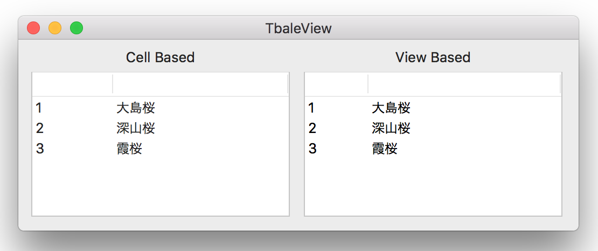

テーブルビューを表示する
ビューにデータを表示する方法は、CellBasedとViewBasedの２種類がある。
CellBasedは、ビューのセルに表示できるのは文字列のみ。セルのクラスは、NSTextFieldCell になる。
ViewBasedは、NSCellクラスのオブジェクトを表示する。NSCellクラスのサブクラスであれば文字列の他にボタンやテキストフィールドなどのコントロールやイメージなど表示することができる。

以上の２通りの方式で、同じ配列を表示してみる。
AppDelegate
ViewBasedビューの場合は、テーブルビューのdelegateにコントローラを指定する必要がある。